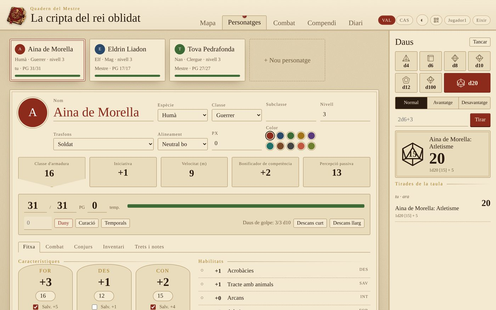
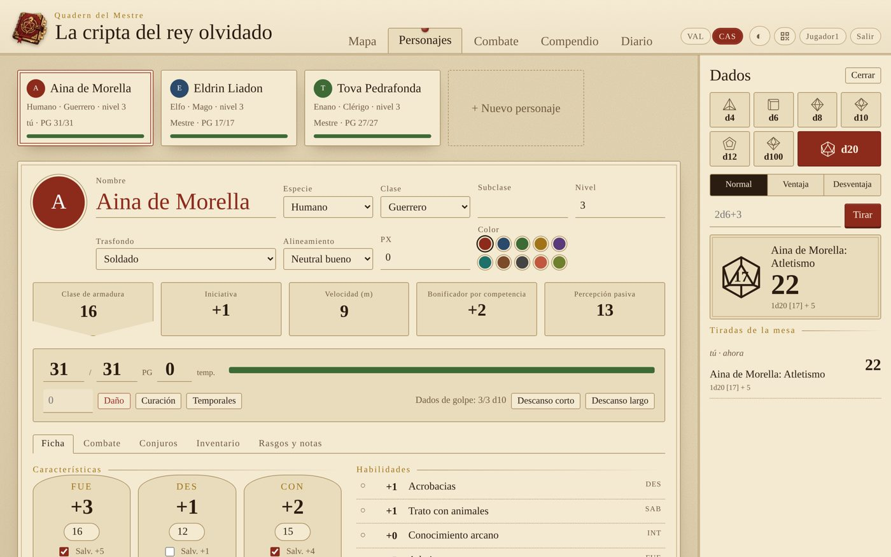
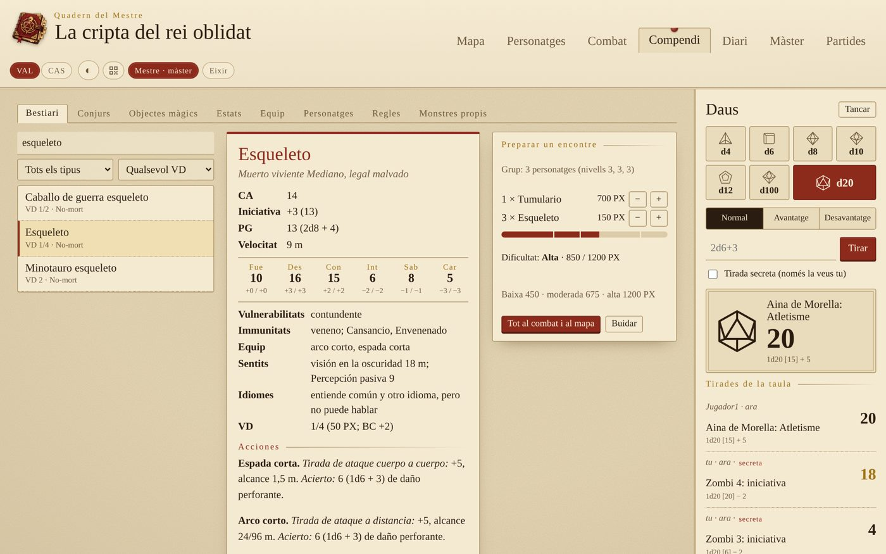
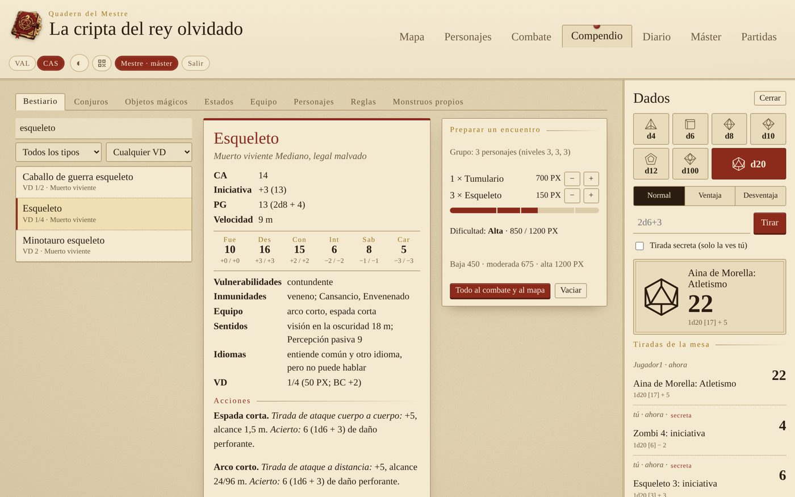
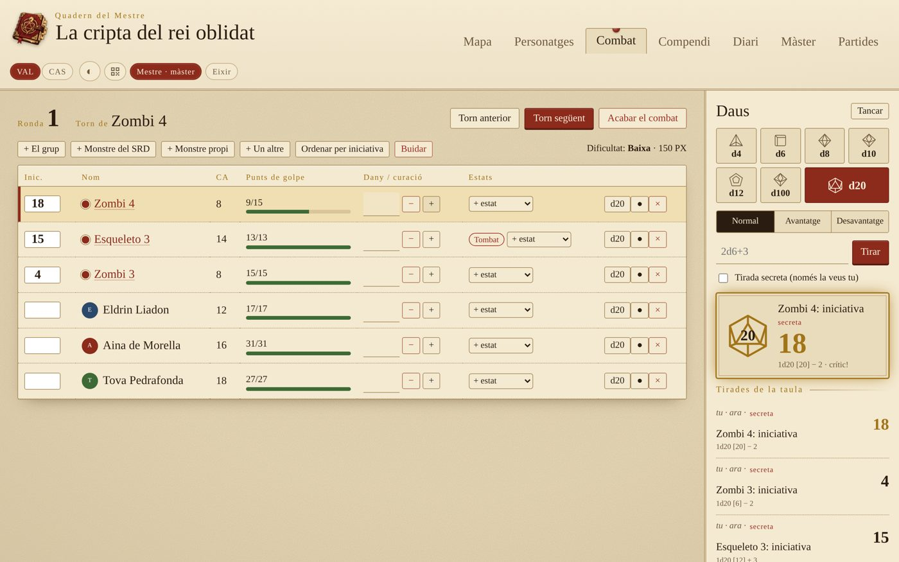
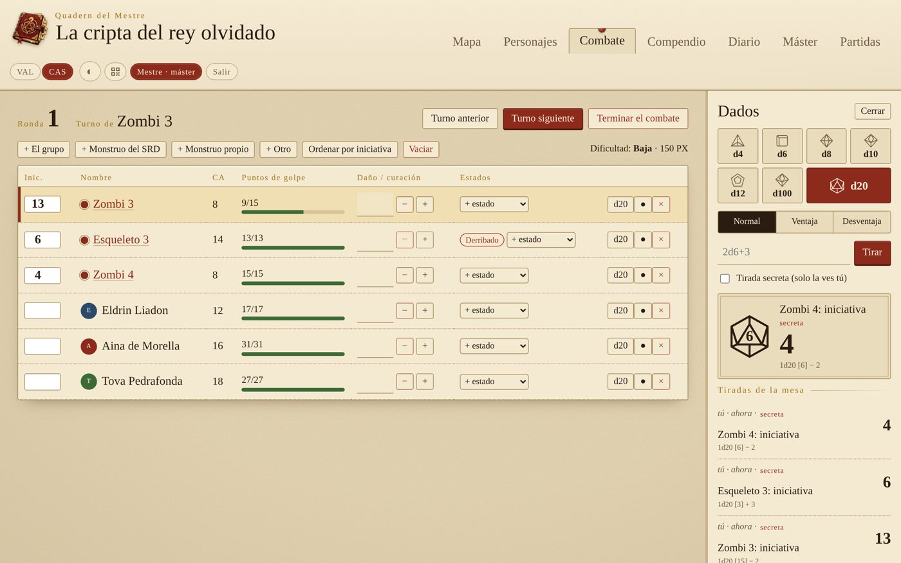
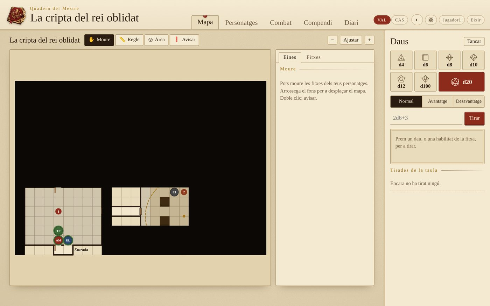
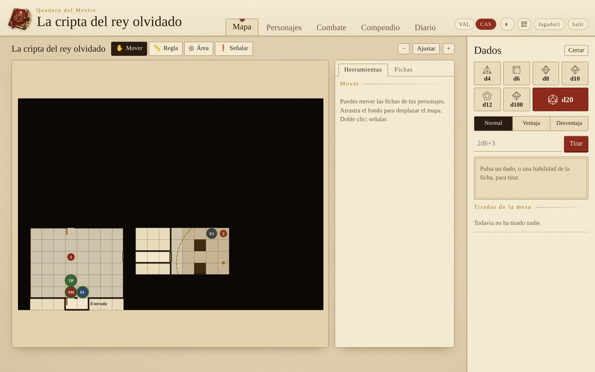

Dirigeix les teues partides de rol a casa, amb tota la taula connectada.
Dirige tus partidas de rol en casa, con toda la mesa conectada.
Ajudant lliure per a partides de 5a edició en valencià i castellà. Un ordinador fa de servidor i la resta de la taula hi entra des del navegador, mòbils inclosos. Tot va en un sol fitxer i no necessita Internet.
Ayudante libre para partidas de 5.ª edición en castellano y valenciano. Un ordenador hace de servidor y el resto de la mesa entra desde el navegador, móviles incluidos. Todo va en un solo archivo y no necesita Internet.
El mapa amb la boira de guerra, vist pel màster.El mapa con la niebla de guerra, visto por el máster.
Què faQué hace
Editor de mapes
Editor de mapas
Imatge de fons (Dungeondraft, Inkarnate, un escaneig…) amb la quadrícula ajustable.
Terreny, parets, portes, portes secretes, finestres, sales i etiquetes.
Boira de guerra: els jugadors no reben res del que hi ha davall, ni les fitxes amagades.
Regle en metres i àrees d'efecte que marquen les caselles afectades.
Cada jugador mou les seues fitxes, amb la vida a l'anell.
Imagen de fondo (Dungeondraft, Inkarnate, un escaneo…) con la cuadrícula ajustable.
Terreno, paredes, puertas, puertas secretas, ventanas, salas y etiquetas.
Niebla de guerra: los jugadores no reciben nada de lo que hay debajo, ni las fichas ocultas.
Regla en metros y áreas de efecto que marcan las casillas afectadas.
Cada jugador mueve sus fichas, con la vida en el anillo.
Fitxes de personatge
Fichas de personaje
Completes, amb les regles de 2024: característiques, habilitats, salvacions, PG, atacs, conjurs amb espais, inventari, monedes, estats, descansos i retrat. Totes les tirades es fan des de la fitxa.
Completas, con las reglas de 2024: características, habilidades, salvaciones, PG, ataques, conjuros con espacios, inventario, monedas, estados, descansos y retrato. Todas las tiradas se hacen desde la ficha.
Combat
Combate
Iniciativa, torns i rondes, dany i curació, estats i monstres amagats. Calcula la dificultat de l'encontre, i els jugadors veuen «Ferit» o «Malferit» en compte dels PG dels monstres.
Iniciativa, turnos y rondas, daño y curación, estados y monstruos ocultos. Calcula la dificultad del encuentro, y los jugadores ven «Herido» o «Malherido» en lugar de los PG de los monstruos.
Compendi del SRD 5.2.1
Compendio del SRD 5.2.1
Amb la traducció oficial al castellà: 330 criatures, 339 conjurs, objectes màgics, estats, equip, classes i regles. Inclou un preparador d'encontres i monstres propis.
Con la traducción oficial al castellano: 330 criaturas, 339 conjuros, objetos mágicos, estados, equipo, clases y reglas. Incluye un preparador de encuentros y monstruos propios.
Diari i documents
Diario y documentos
Un diari de sessions que escriu tota la taula, i documents (cartes, pistes, imatges) que el màster ensenya quan vol.
Un diario de sesiones que escribe toda la mesa, y documentos (cartas, pistas, imágenes) que el máster enseña cuando quiere.
Pestanya del màster i daus
Pestaña del máster y dados
Generadors de noms, PNJ, tavernes, botí i encontres, taules aleatòries pròpies i notes secretes. Daus compartits amb avantatge, desavantatge i tirades secretes.
Generadores de nombres, PNJ, tabernas, botín y encuentros, tablas aleatorias propias y notas secretas. Dados compartidos con ventaja, desventaja y tiradas secretas.
I a més: diverses partides guardades, una partida d'exemple, entrada amb QR, mode fosc i adaptat al mòbil.
Y además: varias partidas guardadas, una partida de ejemplo, entrada con QR, modo oscuro y adaptado al móvil.
CapturesCapturas


Fitxa de personatge.Ficha de personaje.


Bestiari i preparador d'encontres.Bestiario y preparador de encuentros.


Combat, vist pel màster.Combate, visto por el máster.


El mateix mapa, vist per un jugador.El mismo mapa, visto por un jugador.
Com s'usaCómo se usa
A Windows, sense instal·lar res
En Windows, sin instalar nada
Baixa QuadernDelMestre-windows.zip de les Releases, descomprimeix-lo i fes doble clic a QuadernDelMestre.exe. S'obri una finestra amb l'adreça, la contrasenya del màster i el QR, i el navegador ja amb l'app.
Descarga QuadernDelMestre-windows.zip de las Releases, descomprímelo y haz doble clic en QuadernDelMestre.exe. Se abre una ventana con la dirección, la contraseña del máster y el QR, y el navegador ya con la app.
Windows pot avisar que és un programa d'un editor desconegut: prem «Més informació» i «Executa igualment».
Windows puede avisar de que es un programa de un editor desconocido: pulsa «Más información» y «Ejecutar de todas formas».
Amb Python (Linux, Mac o Windows)
Con Python (Linux, Mac o Windows)
Només cal Python 3.8 o més nou. No s'ha d'instal·lar res més.
Solo hace falta Python 3.8 o más nuevo. No hay que instalar nada más.
python3 quadern.py
python3 quadern.py --contrasenya drac # contrasenya del màster
python3 quadern.py --port 9002 # un altre port
python3 quadern.py --partida "La cripta" # obri o crea eixa partida
python3 quadern.py
python3 quadern.py --contrasenya drac # contraseña del máster
python3 quadern.py --port 9002 # otro puerto
python3 quadern.py --partida "La cripta" # abre o crea esa partida
Entrar a la partida
Entrar en la partida
En arrancar, mostra l'adreça per als altres (per exemple http://192.168.1.40:8767), la contrasenya del màster i un codi QR per a entrar des del mòbil. Qui vol ser màster marca «Sóc el màster»; els jugadors entren només amb el nom.
Al arrancar, muestra la dirección para los demás (por ejemplo http://192.168.1.40:8767), la contraseña del máster y un código QR para entrar desde el móvil. Quien quiera ser máster marca «Soy el máster»; los jugadores entran solo con el nombre.
Per a provar-ho tot de seguida: Partides → Crear la partida d'exemple.
Para probarlo todo enseguida: Partidas → Crear la partida de ejemplo.
Les dades
Los datos
Cada partida es guarda a partides/<nom>.json i les seues imatges a partides/<nom>-fitxers/. Els jugadors, les sessions i la contrasenya del màster van a quadern.json. Per a fer una còpia de seguretat, copia-ho tot.
Cada partida se guarda en partides/<nombre>.json y sus imágenes en partides/<nombre>-fitxers/. Los jugadores, las sesiones y la contraseña del máster van a quadern.json. Para hacer una copia de seguridad, cópialo todo.
Programari lliure. Llicència GPL-3.0 o posterior: el podeu usar, copiar, modificar i compartir. Si en publiqueu una versió modificada, també ha de ser lliure. Les propostes de millora i les correccions són benvingudes.
Software libre. Licencia GPL-3.0 o posterior: lo podéis usar, copiar, modificar y compartir. Si publicáis una versión modificada, también debe ser libre. Las propuestas de mejora y las correcciones son bienvenidas.
SRD 5.2.1. Inclou material del System Reference Document 5.2.1 de Wizards of the Coast LLC, amb llicència CC BY 4.0. Les dades venen del projecte Compendio SRD. Atribució completa a NOTICE.md.
SRD 5.2.1. Incluye material del System Reference Document 5.2.1 de Wizards of the Coast LLC, con licencia CC BY 4.0. Los datos vienen del proyecto Compendio SRD. Atribución completa en NOTICE.md.
Ús d'IA. El logo s'ha generat amb IA. El programa, les traduccions, la documentació i aquesta web s'han escrit amb un assistent d'IA i s'han revisat a mà.
Uso de IA. El logo se ha generado con IA. El programa, las traducciones, la documentación y esta web se han escrito con un asistente de IA y se han revisado a mano.